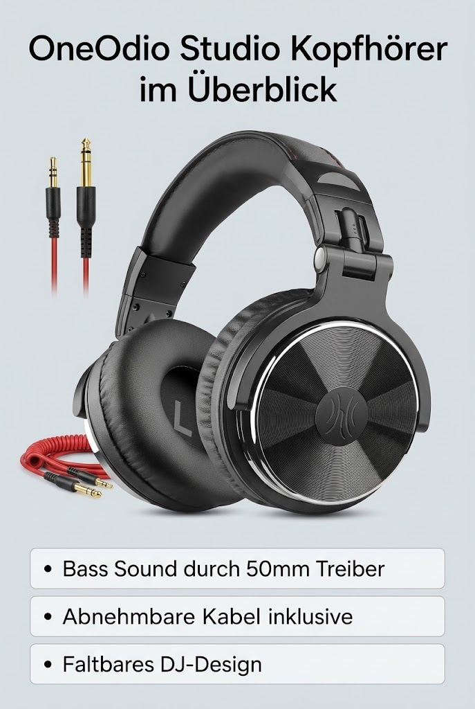
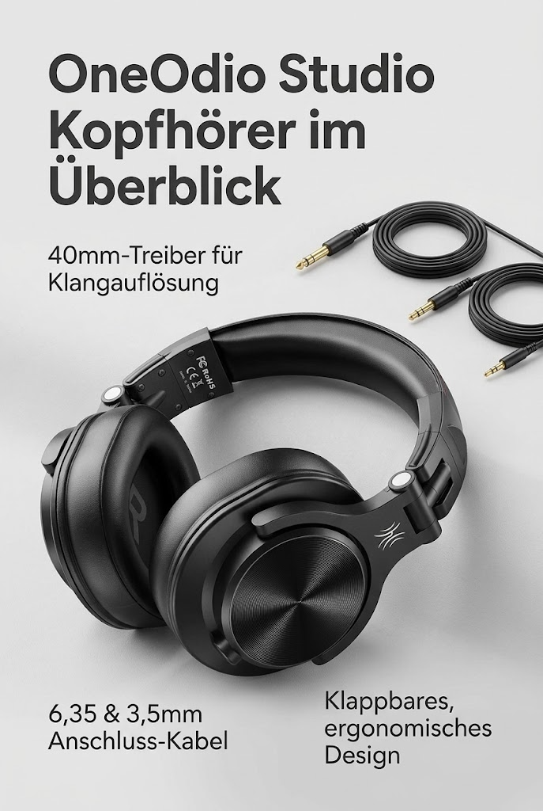
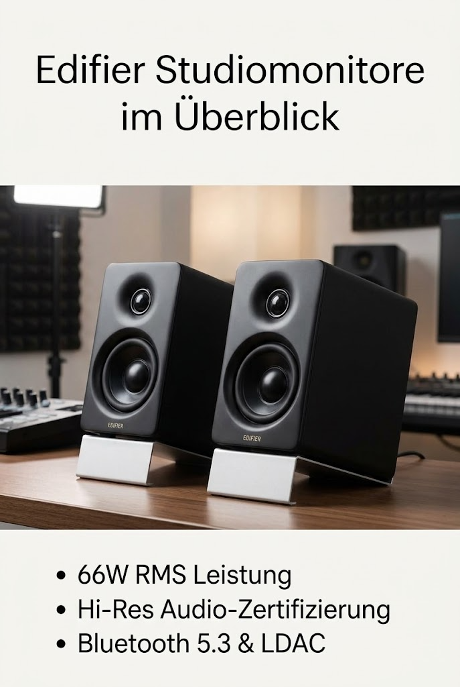
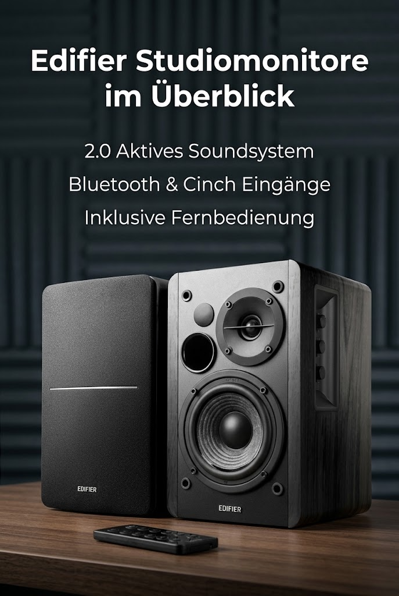

Studio Kopfhörer
Studio Kopfhörer
Studio Kopfhörer
Studio Kopfhörer

Studio KopfhörerOneOdio Over Ear Kopfhörer mit Kabel, 50mm Treiber, Bassklang, 6.35 & 3.5mm Klinke, Shar
4.4 / 5 · 17733 Bewertungen
Studio KopfhörerOneOdio Kopfhörer Over Ear, DJ Kopfhörer mit Kabel, Professionell Geschlossener Studio H
4.5 / 5 · 5711 Bewertungen Audio Interface
Audio Interface
Focusrite Scarlett Solo 3rd Gen USB-C-Audio-Interface
4.6 / 5 · 28957 Bewertungen Audio Interface
Audio Interface
Focusrite Scarlett Solo 4th Gen USB-C-Audio-Interface
4.5 / 5 · 2661 Bewertungen Audio Interface
Audio Interface
FIFINE Gaming Audio Mixer für PC, RGB Soundkarte für XLR Mikrofon, Audio Interface für S
4.2 / 5 · 966 Bewertungen Mikrofon Podcast
Mikrofon Podcast
FIFINE XLR Streaming Mikrofon mit Arm für Podcast Studio, USB Dynamisch Microphone Gamin
4.5 / 5 · 3502 Bewertungen Mikrofon Podcast
Mikrofon Podcast
DJI Mic Mini (2 Sender + 1 Empf. + Ladesch.), Ultraleicht, Detailr. Audio
4.7 / 5 · 10553 Bewertungen Mikrofon Podcast
Mikrofon Podcast
Kabelloses Lavalier-Mikrofon für iPhone, iPad, Android-Handy, 2er-Pack Mini-Mikrofon mit
4.4 / 5 · 3222 Bewertungen Mikrofon Podcast
Mikrofon Podcast
Mini-Lavalier-Mikrofon für Android und iPhone, iOS-Geräte, Rauschunterdrückung, Ansteckm
4.4 / 5 · 1709 Bewertungen MIDI Controller
MIDI Controller
Akai Professional MPK Mini Play MK3 USB MIDI Keyboard Controller
4.5 / 5 · 2251 Bewertungen MIDI Controller
MIDI Controller
Akai Professional MPK Mini IV USB-C MIDI Keyboard Controller, Schwarz
4.6 / 5 · 854 Bewertungen MIDI Controller
MIDI Controller
Hercules DJControl Inpulse 200 MK2 – Idealer DJ-Controller zum Erlernen des Mixens
4.5 / 5 · 1162 Bewertungen Studiomonitore
Studiomonitore
Edifier MR4 kompakte 2.0 Studiomonitore (42 Watt) mit Class-D Verstärker und Zwei wählba
4.5 / 5 · 3167 Bewertungen
StudiomonitoreEdifier M60 Multimedia-Lautsprecher Bluetooth 5.3, 66W RMS, Hi-Res Audio & Hi-Res Wirele
4.7 / 5 · 1904 Bewertungen
StudiomonitoreEdifier Studio R1280DB 2.0 Aktivboxen, kabellose Bluetooth Regallautsprecher in schwarz
4.6 / 5 · 5368 Bewertungen Akustik Absorber
Akustik Absorber